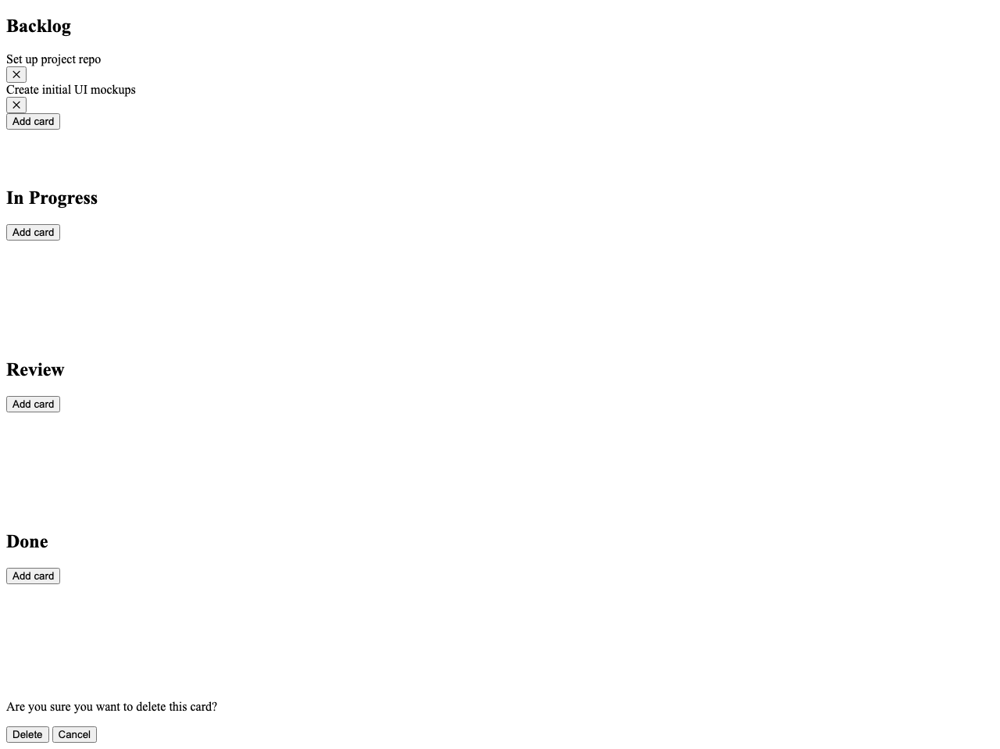

openai/gpt-oss-20b
openai
20B
· 3.6B aktiv
mlx / MXFP4
ctx 128k
released 2025-08-04
tool_use
Score
0.52
Statisch
1.00
Funktional
0.83
Qualitativ
0.41
Worum geht es? Was wird getestet?
Aufgabe: Aus einem ~200-Wörter-Prompt soll das Modell ein voll funktionales Kanban-Board als single-file HTML mit Drag & Drop, localStorage-Persistenz, Edit/Delete und Confetti-Animation generieren — in einem einzigen Chat ohne Iteration. Der Prompt enthält zusätzlich einen kleinen `data-testid`-Vertrag, damit ein Playwright-Test die App ferngesteuert bedienen kann.
Drei Signale fließen in den Score ein:
(1) Statisch — Linter prüft konkrete Constraints im HTML (Spalten, Tailwind, localStorage-Aufruf, kein Framework, kein window.alert/prompt, …).
(2) Funktional — Playwright fährt eine kleine CRUD-Sequenz: Karte anlegen, Karte löschen mit Bestätigung, Reload — bleibt der Zustand erhalten? — und prüft, ob während des gesamten Flows JS-Konsolen-Fehler auftreten. Drag & Drop und Confetti werden bewusst nicht funktional getestet (zu viele Implementierungsvarianten).
(3) Qualitativ — LLM-as-Judge bewertet Screenshot und Code (Visual + Codequalität + Konsistenz Render↔Code).
Score = Mittelwert über die vorhandenen Signale.
Warum Modelle scheitern: Reasoning-Modelle verbrauchen ihre Token im Denken statt im Schreiben. Sliding-Window-Modelle (Gemma 4) verlieren Constraints am Anfang des Prompts. Kleine Modelle (<3B) produzieren oft kein zusammenhängendes HTML — oder ignorieren den data-testid-Vertrag, was die funktionalen Tests reihenweise rot färbt.
Prompt
System-Prompt
You are a careful front-end engineer.
Developer-Prompt
Create a fully functional Kanban board in a single HTML file using vanilla JavaScript (no frameworks like react). Requirements: - Columns: Backlog, In Progress, Review, Done. - Cards must be: - draggable across columns, - editable in place, - persisted in localStorage (state survives reloads) - please use your own namespace, - deletable with a confirmation prompt. - Each column provides an "Add card" action. - Style with Tailwind via CDN. - Add subtle CSS transitions and trigger a confetti animation when a card moves to "Done". - Thoroughly comment the code. - dont use window.alert or window.prompt to add/edit/delete cards - if there are no cards yet, create some dummy cards - modern and vibrant design Stable test selectors (mandatory — these data-testid attributes are used by an automated functional test; do not omit, rename, or split them across multiple elements): - Column containers: data-testid="column-backlog", data-testid="column-in-progress", data-testid="column-review", data-testid="column-done". - Every "Add card" button (one per column): data-testid="add-card". - Every card element: data-testid="card". - Inside each card, the delete trigger: data-testid="delete-card". - The confirm button of the delete-confirmation dialog/modal: data-testid="confirm-delete". - The input/textarea where a new card title is typed: data-testid="card-input". Pressing Enter in this input MUST commit the new card. As answer return the plain HTML of the working application (script and styles included)
Screenshot der gerenderten App

Qualitativ · LLM-as-Judge (openai/gpt-5.4)
2026-04-28T21:45:29.598241+00:00
0.41
Visuell (Screenshot)
-
board renders0.80
-
column completeness1.00
-
cards present0.50
-
ui affordances0.70
-
design quality0.20
Das Board rendert grundsätzlich und alle vier Spalten sind sichtbar, aber das Layout ist fast völlig ungestylt. Nur in Backlog sind Karten sichtbar; zusätzlich ist der Delete-Dialog unten offen bzw. fehlplatziert, was den Eindruck einer fehlerhaften UI verstärkt.
Code-Qualität (HTML/JS)
-
code structure0.60
-
dom safety0.40
-
robustness0.10
-
code quality0.30
Die Struktur ist noch einigermaßen funktional mit getrennten Render- und Hilfsfunktionen, hat aber gravierende Logikfehler. Besonders kritisch: Die State-Keys passen nicht zu den verwendeten Spaltennamen (`inProgress` vs. `in-progress`), der Drop-Code verwechselt Array-Inhalt mit Spaltennamen, und `innerHTML` wird zwar nur zum Leeren genutzt, aber Robustheit rund um `localStorage`/`JSON.parse` fehlt komplett.
Konsistenz Render ↔ Code
0.20
Deutliche Diskrepanz zwischen Anspruch und Render: Der Code verspricht ein modernes Tailwind-Board, im Screenshot erscheint jedoch nahezu nur Browser-Default-Styling, was stark auf fehlgeschlagenes CSS-Laden oder fehlerhafte Klassenwirkung hindeutet. Zudem erklären die Key-Mismatches im Code, warum nur Teile funktionieren und das Gesamtverhalten brüchig wirkt.
Statisch · Linter-Checks (12/12 bestanden)
-
✓
Spalte 'Backlog'
-
✓
Spalte 'In Progress'
-
✓
Spalte 'Review'
-
✓
Spalte 'Done'
-
✓
HTML5 Drag&Drop oder Sortable-Lib
-
✓
localStorage-Persistenz
-
✓
Tailwind via CDN
-
✓
Confetti-Animation auf 'Done'
-
✓
Add-Card-Button
-
✓
Vanilla JS (kein React/Vue/Angular/Svelte)
-
✓
Keine window.alert/prompt für CRUD
-
✓
Editierbare Karten (contenteditable / input)
Funktional · E2E-Tests (5/6 bestanden)
-
✓
Seite lädt mit allen 4 Spalten
-
✓
Karte hinzufügen via Button
-
✓
Karte wird genau 1× angelegt (kein Doppel-Submit)
-
✓
Karte löschen via Button + Bestätigung
-
✓
Karten überleben einen Reload
-
✗
Keine JS-Konsolen-Fehlerpageerror: Cannot read properties of undefined (reading 'forEach'); pageerror: Cannot read properties of undefined (reading 'forEach'); pageerror: Cannot read properties of undefined (reading 'forEach')
Roh-Antwort des Modells
```html
<!DOCTYPE html>
<html lang="en" class="h-full bg-gray-100">
<head>
<meta charset="UTF-8">
<title>Vanilla Kanban Board</title>
<!-- Tailwind CSS CDN -->
<link href="https://cdn.jsdelivr.net/npm/tailwindcss@3.4.1/dist/tailwind.min.css" rel="stylesheet">
<style>
/* Custom transitions */
.card {
transition: transform 0.2s ease, background-color 0.2s ease;
}
.card.dragging {
opacity: 0.6;
transform: scale(1.02);
}
.column {
min-height: 200px;
}
</style>
</head>
<body class="h-full flex items-center justify-center p-4">
<div id="app" class="w-full max-w-6xl grid grid-cols-1 md:grid-cols-4 gap-4">
<!-- Backlog Column -->
<div class="bg-white rounded-lg shadow p-3 column" data-testid="column-backlog">
<h2 class="font-semibold mb-2">Backlog</h2>
<div class="cards space-y-2" data-column="backlog"></div>
<button class="mt-3 w-full bg-blue-600 text-white py-1 rounded hover:bg-blue-700 focus:outline-none"
data-testid="add-card">Add card</button>
</div>
<!-- In Progress Column -->
<div class="bg-white rounded-lg shadow p-3 column" data-testid="column-in-progress">
<h2 class="font-semibold mb-2">In Progress</h2>
<div class="cards space-y-2" data-column="in-progress"></div>
<button class="mt-3 w-full bg-blue-600 text-white py-1 rounded hover:bg-blue-700 focus:outline-none"
data-testid="add-card">Add card</button>
</div>
<!-- Review Column -->
<div class="bg-white rounded-lg shadow p-3 column" data-testid="column-review">
<h2 class="font-semibold mb-2">Review</h2>
<div class="cards space-y-2" data-column="review"></div>
<button class="mt-3 w-full bg-blue-600 text-white py-1 rounded hover:bg-blue-700 focus:outline-none"
data-testid="add-card">Add card</button>
</div>
<!-- Done Column -->
<div class="bg-white rounded-lg shadow p-3 column" data-testid="column-done">
<h2 class="font-semibold mb-2">Done</h2>
<div class="cards space-y-2" data-column="done"></div>
<b
Score
0.90
Worum geht es? Was wird getestet?
Aufgabe: In einem deutschen Buch-Korpus (mit eingestreutem Quellcode) werden 10 künstliche Fakten an gleichmäßig verteilten Tiefen (5% – 95%) versteckt. Das Modell muss alle wiederfinden.
Ablauf — DREI Turns im selben Chat-Kontext (Prefill nur einmal):
Turn 1 — Korpus-Zusammenfassung: Modell bekommt den langen Korpus und soll ihn in 3-5 Sätzen zusammenfassen. Erzwingt eine echte Verarbeitung des Textes.
Turn 2 — Needle-Retrieval: gleiche Konversation, jetzt die Bedürfnisfragen für die 10 versteckten Fakten.
Turn 3 — Verstehen + Halluzinations-Fallen: 4 Faktenfragen zum Buchinhalt + 3 Halluzinations-Fallen (Modell soll erkennen, dass die Frage im Text NICHT beantwortet wird).
Default-Modus läuft EINE einheitliche Stufe für alle Modelle: 120k Tokens. Modelle ohne ausreichendes max_context werden in dieser Stufe nicht ausgeführt. `niah_deep` läuft zusätzlich 32k / 64k / 200k für eine vollständige Heatmap.
Score-Gewichtung: Zusammenfassung 20% + Needle-Retrieval 50% + Verstehen/Halluzinations-Resistenz 30%.
Warum Modelle scheitern: Sliding-Window-Attention (Gemma 4) sieht nur die letzten 1-2k Tokens scharf. Reasoning-Modelle laufen auf Token-Limit, bevor sie antworten. Q4-KV-Cache verfälscht Recall messbar bei langen Kontexten. Bei den Halluzinations-Fallen verleitet der Helpful-Bias zu plausibel klingenden Erfindungen.
Prompt
Developer-Prompt
TURN 1 (User): Im folgenden Abschnitt befindet sich ein längerer Mischtext aus deutschsprachiger Erzählung und Quellcode. ===== TEXT BEGINN ===== <korpus mit eingestreuten needles, je nach stage 32k–128k tokens> ===== TEXT ENDE ===== Fasse den Inhalt des Textes in 3-5 Sätzen zusammen. Nenne Hauptfiguren, Schauplatz und die wichtigsten Themen. TURN 2 (User, im selben Chat-Kontext): Beantworte jetzt die folgenden Fragen ausschließlich anhand des oben gezeigten Textes — erfinde nichts, ergänze nichts und übernehme keine Allgemeinwissen-Annahmen. Fragen: 1. <frage zu needle 1> 2. <frage zu needle 2> ... Antworte als nummerierte Liste 1., 2., 3. mit jeweils einem kurzen Satz.
Pro Kontextlänge wurden 10 Needles über den Korpus verteilt. Der NIAH-Score kombiniert Korpus-Zusammenfassung, Needle-Retrieval und optional Verstehen + Halluzinations-Fallen. LLM-Judges ersetzen die heuristischen Scores für Summary und Verstehen, sobald vorhanden.
Stufe: 120k Tokens
Sub-Benchmark · Korpus-Zusammenfassung
Turn 1
0.75
LLM-Judge
heur. 1.00
~120k Tokens Input
Der Roman spielt im „Blumental“, einem idyllischen, preußischen Waldgebiet nahe Wriezen, und erzählt die Abenteuer des jungen Schmiedelehrlings Gottlieb Lasso sowie seiner Freundin Malineken. Die beiden erleben die napoleonische Besetzung, den Verlust ihrer Eltern und die Verfolgung durch französische Truppen, während sie gleichzeitig versuchen, heimlich Waffen zu schmieden und die Widerstandsbewegung des „Tugendbundes“ zu unterstützen. Gottlieb ist ein idealistischer, von Gerechtigkeit getriebener Held, Malineken dagegen eine lebensfrohe, mutige junge Frau, die sich zwischen Freundschaft und Pflicht bewegt. Zentrale Themen sind Krieg und Unterdrückung, der Kampf um Freiheit und Gerechtigkeit, die Rolle des Glaubens und der Moral sowie das Streben nach persönlicher Ehre und Selbstbestimmung.
LLM-Judge Summary (openai/gpt-5.4)
0.75
-
main characters0.85
-
setting1.00
-
plot0.60
-
themes0.90
-
code text mix recognized0.00
-
no hallucinations0.65
Schauplatz, Zeitkontext sowie Gottlieb und Malineken sind im Kern richtig erfasst, und auch zentrale Themen wie Glaube, Unterdrückung und Freiheitskampf passen gut. Schwächer ist der Plotteil: "Verlust ihrer Eltern" verallgemeinert fälschlich auf beide Figuren, und das heimliche Waffenschmieden ist eher erfunden als ein zentrales Buchmotiv; der Mischtext mit C++-Code bleibt unerwähnt.
- ✓ 3-5 Sätze · 4 Sätze gezählt
- ✓ Höchstens 220 Wörter · 104 Wörter
- ✓ Korpus-Stichwörter (3/4) · ✓ Gottlieb, ✓ Malineken, ✓ Schmied, ✗ Bonaparte
Sub-Benchmark · Needle-Retrieval
Turn 2
10/10
hits
-
●
5% (5 %)erwartet: blauer Ankerstein, Lübeck-1907, A-318
-
●
10% (10 %)erwartet: smaragdgrün, Schlüssel, Seriennummer, 7-Bravo-12
-
●
15% (15 %)erwartet: Nordstern-Brigade, violetter
-
●
25% (25 %)erwartet: Indigo-Quark
-
●
33% (33 %)erwartet: Atlantis-Mira, NL-7711, 142
-
●
50% (50 %)erwartet: Ehrenmitglied, Aluminium-Gesellschaft, Köln
-
●
65% (65 %)erwartet: Safran-Klops Margarethe, 7 Gramm|7 g, 3 Stunden|drei Stunden
-
●
75% (75 %)erwartet: Erbe von Onkel Walpurgis, 42-Lima
-
●
85% (85 %)erwartet: 7f4a2e91-marlin-2026
-
●
90% (90 %)erwartet: Coriolis-Effekt, Pendel, Memo, Dr. Kühn, 17.03.2024
Modell-Antwort auf die Needle-Fragen
1. Ein blauer Ankerstein mit der Gravur „Lübeck‑1907“ und der Inventarnummer A‑318. 2. Ein smaragdgrüner Schlüssel, Seriennummer 7‑Bravo‑12, versteckt unter dem Amboss. 3. Die Nordstern‑Brigade vom 9. Oktober, deren Standarte aus violetter Seide gefertigt war. 4. Die Katze namens Indigo‑Quark wartete hinter der Schmiede auf den Postboten. 5. Das Schiff „Atlantis‑Mira“, Registriernummer NL‑7711, nahm am 3. Mai 142 Säcke Gerste an Bord. 6. Der Pfarrer von Wriezen wurde zum Ehrenmitglied der Aluminium‑Gesellschaft Köln ernannt. 7. Das Rezept „Safran‑Klops Margarethe“ benötigt 7 g Safran und eine Garzeit von drei Stunden. 8. Auf der Regentonne im Hof stand die Inschrift „Erbe von Onkel Walpurgis, Charge 42‑Lima“. 9. Im Quellcode‑Kommentar steht der RUNTIME_TOKEN‑Wert ‘7f4a2e91-marlin-2026’. 10. Der TODO‑Kommentar lautet „Coriolis‑Effekt im Pendel berücksichtigen“ und verweist auf das Memo von Dr. Kühn vom 17.03.2024.
Sub-Benchmark · Verstehen + Halluzinations-Fallen
Turn 3
0.83
LLM-Judge
heur. 0.67
Fakten 2/4 ·
Fallen 2/2
-
FaktenfrageWie heißt der Schmied vom Blumental, bei dem Gottlieb in der Lehre ist? (Vor- und Nachname)J1. Michael Lebbin.
-
FaktenfrageWie heißt der französische Kapitän, der Gottliebs Eltern getötet hat?J2. Kapitän Etienne de Beaumont.
-
FaktenfrageWomit lenkte Malineken die Wachen ab, um den Schlüssel zu entwenden?J3. Der Text gibt nicht an, womit Malineken die Wachen ablenkte – diese Information ist nicht enthalten.
-
FaktenfrageWarum muss Gottlieb sich verborgen halten? Was würden die Franzosen sonst tun?J4. Gottlieb muss sich verstecken, weil die Franzosen ihn sonst töten würden; er würde gefangen genommen und hingerichtet.
-
Halluzinations-FalleWie heißt Gottliebs Onkel?J5. Der Name des Onkels von Gottlieb wird im Text nicht genannt – die Frage ist unbeantwortet.
-
Halluzinations-FalleMit welcher List überlistete Michael Lebbin Kaiser Bonaparte persönlich?J6. Der Text enthält keine Angaben darüber, wie Michael Lebbin Kaiser Bonaparte persönlich überlistet hat – diese Information fehlt.
Artefakte:
Breakdown pro Kontextlänge
Haystack 120k Tokens